Phần II · Bài 9 — Mô hình động lực học lấy cảm hứng sinh học cho nhận dạng vật thể
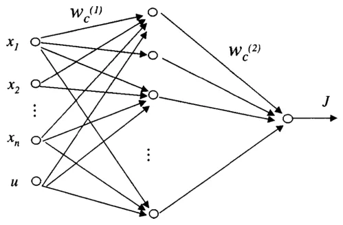
Hình 3 Cấu trúc mạng nơ-ron của mạng phê bình
Tương tự, đối với mạng hành động, quy tắc cập nhật trọng số nhằm tối thiểu hóa sai số hành động, được định nghĩa như sau [11, 12, 21],
Ea(t) = 1
2 e2 a(t) = 1
2 [J(t) −Uc(t)]2 . (4)
ANN được chọn để triển khai mạng hành động và mạng phê bình nhờ tốc độ xử lý nhanh và khả năng tính toán song song. Cấu trúc cụ thể của NN cho cả mạng hành động và mạng phê bình được triển khai dưới dạng một NN truyền thẳng đa lớp phi tuyến với một lớp ẩn. Sơ đồ nguyên lý của mạng phê bình được trình bày trong Hình 3 [11, 21]. Phần trình bày toán học chi tiết về động lực học của HDP có thể được tìm thấy trong Phụ lục A.
Hình 4 trình bày sơ đồ nguyên lý cho hệ thống AOR dựa trên DHP. So với HDP, DHP là một thuật toán RL gia tăng. Mạng ACD của DHP tương tự như của HDP. Khi triển khai DHP, mạng phê bình dùng để xấp xỉ đạo hàm của hàm chi phí theo trạng thái của hệ thống (plant). Giảm dần theo gradient λ°
Trạng thái X(t)
Trạng thái X(t+1)
u(t)
Mạng Hành động Hệ thống AOR
λ(t+1)
Độ hữu dụng
Mạng Phê bình
Trạng thái X(t) Trạng thái X(t)
MCJ MSJ
tại ‘t+1’
Mạng Phê bình
∂X(t+1)/∂X(t)
tại ‘t’
∂X(t+1)/∂u(t)
λ(t) λ°
Mục tiêu Phê bình
.
Hình 4 Sơ đồ nguyên lý cho hệ thống AOR sử dụng phương pháp thiết kế DHP cũng được dùng để tối ưu hóa. Đối với thuật toán DHP, các chi tiết toán học có thể được tìm thấy trong Phụ lục B.
3 Kết quả Mô phỏng
Trong phần này, chúng tôi thảo luận về hiệu năng của các hệ thống nhận dạng đối tượng dựa trên HDP và DHP nhằm khám phá vai trò của các phép biến đổi khác nhau trong việc xác thực và nhận dạng đối tượng sử dụng ảnh 2-D. Đối với cả hai mô hình tính toán AOR dựa trên HDP và DHP, như được trình bày lần lượt trong Hình 2 và Hình 4, các lựa chọn tham số sau đây được áp dụng. Các phép biến đổi (biến dạng) đối tượng được khảo sát trong chương này cụ thể gồm: đa độ phân giải, xoay, thay đổi tỷ lệ, tịnh tiến và che khuất. Hệ thống AOR xử lý các ảnh bị biến dạng này để thực hiện nhận dạng hoặc xác thực đối tượng tiếp theo. Hệ thống cập nhật trạng thái theo quyết định hành động do RL thực hiện trong mạng hành động. Trong mô phỏng của chúng tôi, mạng hành động có thể đưa ra đầu ra u(t) cho hệ thống tùy thuộc vào động lực học của hệ thống AOR. Nếu giá trị hành động u(t) nhỏ hơn hoặc bằng 0, hệ thống tiến một bước tới trạng thái tiếp theo i +1; ngược lại, nó sẽ lùi một bước về trạng thái trước đó i −1. Tín hiệu tăng cường r(t) có dạng nhị phân đơn giản là ‘0’ và ‘−1’ tương ứng với ‘phần thưởng’ và ‘hình phạt’. Giá trị của hàm hữu dụng mục tiêu mong muốn Uc(t) cho mạng hành động được đặt bằng 0. Tốc độ học ban đầu lc(0) và la(0) được đặt là 0,25, và giảm dần theo công thức lc(t) = 1 t lc(0) và la(t) = 1 t la(0) lần lượt cho mạng phê bình và mạng hành động. Số nút trong lớp ẩn của cả mạng hành động và mạng phê bình đều được đặt là 6. Hệ số chiết khấu α được chọn là 0,95. Một số lần chạy mẫu và đánh giá thống kê của hai thuật toán được minh họa trong phần này.
3.1 Đa độ phân giải
Phép biến đổi ảnh với sự thay đổi độ phân giải được trình bày trong Hình 5. Đối với một hệ thống nhận dạng đối tượng, những ảnh đa độ phân giải này có thể được coi là các ảnh kiểm tra đầu vào chưa biết chỉ có một tham số thay đổi, đó là độ phân giải. Sự tiến hóa đa độ phân giải của ảnh là một phép xấp xỉ tốt cho quá trình nhận thức theo hướng chú ý trong các hệ thống sinh học. Thiết kế AOR dựa trên RL tương tự khai thác DHP được thảo luận trong [12]. Cả hai mô hình AOR dựa trên HDP và DHP đều được khảo sát đối với
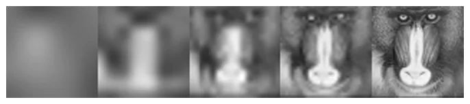
Hình 5 Ảnh đa độ phân giải làm đầu vào cho hệ thống
các biến dạng đa độ phân giải trong ảnh của một đối tượng [11, 12]. Trong thí nghiệm của chúng tôi, ngân hàng ảnh thu được bằng cách áp dụng phân tích wavelet Daubechies cấp 4 [11]. Ngân hàng ảnh thu được gồm năm ảnh có mức độ phân giải tăng dần, như minh họa trong Hình 5. Các ảnh này được dùng làm đầu vào cho hệ thống dưới dạng các trạng thái. Do đó, trong một lần chạy điển hình, một trong các ảnh có độ phân giải thấp hơn được sử dụng làm đầu vào cho mô-đun hệ thống của AOR. Sau đó, mạng AOR được phép thực hiện mô phỏng động. Khi quá trình học hoàn tất, hệ thống cuối cùng hội tụ về ảnh tham chiếu có độ phân giải cao nhất. Tại thời điểm này, hệ thống AOR đã nhận dạng hoặc xác thực được ảnh đầu vào có độ phân giải thấp hơn. Động lực học hệ thống tương tự cũng áp dụng cho tất cả các bài toán biến đổi (biến dạng) khác được thảo luận trong các phần tiếp theo. Đối với việc triển khai hệ thống nhận dạng đối tượng của chúng tôi, các độ phân giải được đánh số từ 0 cho độ phân giải thấp nhất đến 4 cho độ phân giải cao nhất. Ảnh ở độ phân giải cao nhất đóng vai trò là tín hiệu tham chiếu cho hệ thống. Trạng thái ban đầu của hệ thống ở mức độ phân giải 0, và trạng thái của hệ thống tiến hóa theo giá trị hành động u(t) trong suốt quá trình học của hệ thống AOR. Hình 6 và Hình 7 lần lượt minh họa một lần chạy điển hình của HDP và DHP để nhận dạng ảnh đa độ phân giải. Sự thay đổi của mức độ phân giải và sai số phê bình được thể hiện như là hàm của số vòng lặp. Trong cả hai thuật toán học, khi số vòng lặp tăng lên, mạng tăng dần mức độ phân giải và duy trì trạng thái sau khi đạt đến mức tham chiếu. Ở cả HDP và DHP, các mạng ACD đã nhận dạng thành công đối tượng và khóa ở mức tham chiếu khi hoàn tất việc học thành công. Hình 6(a) cho thấy trong lần chạy này của thiết kế HDP, hệ thống mất 6 vòng lặp để nhận dạng mức độ phân giải cao nhất, trong khi ở lần chạy DHP minh họa trong Hình 7(a), hệ thống mất 7 vòng lặp để đạt đến mức tham chiếu. Lưu ý rằng mặc dù chúng tôi sử dụng các mức độ phân giải (hoặc các phép biến đổi khác như xoay, tỷ lệ, v.v.) làm trạng thái để đơn giản hóa, bài toán nhận dạng/xác thực không chỉ đơn thuần là nhận dạng/xác thực các bộ đếm phân biệt các trạng thái khác nhau. Thay vào đó, động lực học của hệ thống AOR xem xét toàn bộ ảnh làm đầu vào cho hệ thống để đạt được khả năng nhận dạng/xác thực mong muốn. Hơn nữa, nếu hệ thống AOR bắt đầu ở đâu đó tại khoảng giữa các trạng thái, ví dụ
Mức độ phân giải theo Số vòng lặp
Sai số phê bình theo Số vòng lặp
4
800
3.5
700
3
600
Mức độ phân giải
2.5
500
Sai số phê bình
2
400
1.5
300
1
200
0.5
100
1 2 3 4 5 6 7 8 9 10 0
1 2 3 4 5 6 7 8 9 10 0
Số vòng lặp
Số vòng lặp
(a) Mức độ phân giải (b) Sai số phê bình
Hình 6 Quá trình học HDP đối với đối tượng đa độ phân giải
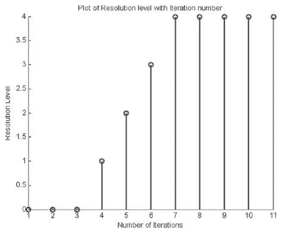
Hình 7 Quá trình học DHP đối với đối tượng đa độ phân giải
(a) Mức độ phân giải
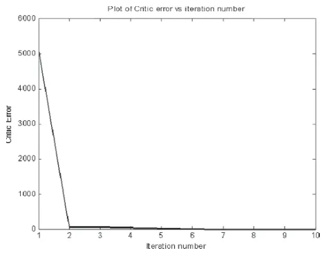
(b) Sai số phê bình chẳng hạn ở mức 4 trong đa độ phân giải ở Hình 5; hệ thống vẫn trải qua cùng một quá trình mô phỏng động để đi đến ảnh tham chiếu mục tiêu. Tuy nhiên, trong trường hợp này, số vòng lặp để đạt tới mục tiêu mong muốn sẽ ít hơn so với đầu vào ở mức độ phân giải nhỏ hơn 4 đối với hệ thống.
Các sai số phê bình, khi chúng thay đổi qua từng vòng lặp, đối với cả HDP và DHP được trình bày lần lượt trong Hình 6(b) và 7(b). Trong cả hai đồ thị, sai số ban đầu rất cao, và sai số phê bình giảm nhanh chóng ngay khi hệ thống bắt đầu quá trình học. Ở cả hai thiết kế, một khi hệ thống nhận dạng được đối tượng, sai số phê bình tiến về không và duy trì ở mức không sau đó khi hệ thống khóa vào đối tượng. Một so sánh thống kê về quá trình học dựa trên HDP và DHP được cung cấp trong Mục 3.4.
3.2 Xoay
Để nhận dạng ảnh ở các góc xoay khác nhau, ngân hàng ảnh được sử dụng trong mô phỏng bao gồm một tập hợp các ảnh với các góc xoay khác nhau. Trong phần này, cả phép xoay trong mặt phẳng 90◦ và 180◦ đều được xem xét.
Ngân hàng ảnh cho phép xoay 180◦ được trình bày trong Hình 8. Các mức xoay cũng được đánh số từ 0 cho ảnh ngoài cùng bên trái đến 9 cho ảnh ngoài cùng bên phải, và ảnh ngoài cùng bên phải là tín hiệu tham chiếu cho hệ thống.
Quá trình học trong các trường hợp 90◦ và 180◦ cho thấy hành vi tương tự nhau. Hình 9 và Hình 10 cung cấp một lần chạy ví dụ cho phép xoay 180◦. Trong cả hai thuật toán học, khi số vòng lặp tăng lên, các mạng ACD nhận dạng thành công ảnh và khóa đối tượng ngay khi hoàn tất việc học thành công.
Các sai số phê bình khi chúng thay đổi qua từng vòng lặp đối với cả HDP và DHP được trình bày lần lượt trong Hình 9(b) và Hình 10(b). Trong cả hai đồ thị, sai số phê bình giảm nhanh chóng khi hệ thống bắt đầu quá trình học. Ở cả hai thiết kế, một khi hệ thống nhận dạng được ảnh, sai số phê bình tiến về không và duy trì ở mức không sau đó khi hệ thống khóa đối tượng. Trong khi ở trường hợp HDP, sai số phê bình có một số dao động trong quá trình học, sai số phê bình ở DHP giảm đơn điệu.
3.3 Tỷ lệ, Che khuất và Tịnh tiến
Các quy trình mô phỏng cũng được áp dụng cho các ảnh bị thay đổi tỷ lệ, các ảnh có mức độ che khuất khác nhau ở trung tâm và các ảnh bị tịnh tiến. Các ngân hàng ảnh được sử dụng trong ba trường hợp khác nhau được minh họa trong các Hình 11, 12 và 13.
Quá trình học đối với các ảnh bị thay đổi tỷ lệ, che khuất và tịnh tiến cho thấy các hành vi tương tự như đã trình bày trong Mục 3.1 và 3.2. Cả hai thuật toán học HDP và DHP đều thực hiện thành công nhiệm vụ nhận dạng hoặc xác thực, và chúng cũng có thể khóa đối tượng khi việc học thành công được hoàn tất.
3.4 So sánh Thống kê giữa các Hệ thống AOR dựa trên HDP và DHP
Để so sánh hiệu năng của các hệ thống AOR dựa trên HDP và DHP một cách thống kê, một thí nghiệm học theo lô được thực hiện. Đối với mỗi phép biến đổi riêng lẻ, chương trình học theo lô bao gồm 100 lần chạy. Trong một lần chạy, tối đa ba lần thử liên tiếp được cho phép. Một lần chạy được coi là thành công nếu nó học thành công
Hình 8 Ngân hàng ảnh cho phép xoay lên đến 180◦
Đồ thị Mức độ xoay theo Số vòng lặp
200 Đồ thị Sai số phê bình theo Số vòng lặp
9
180
8
160
7
140
6
Mức độ xoay
Sai số phê bình
120
5
100
4
80
3
60
2
40
1
20
0 5 10 15 20 0
0 5 10 15 20 0
Số vòng lặp
Số vòng lặp
(a) Mức độ xoay (b) Sai số phê bình
Hình 9 Quá trình học HDP đối với đối tượng xoay 180◦
Mức độ phân giải theo Số vòng lặp
6000 Sai số phê bình theo Số vòng lặp (xoay)
9
8
5000
7
Mức độ phân giải
6
4000
Sai số phê bình
5
3000
4
3
2000
2
1000
1
0 5 10 15 20 0
0 5 10 15 20 0
Số vòng lặp
Số vòng lặp
(a) Mức độ xoay (b) Sai số phê bình
Hình 10 Quá trình học DHP đối với đối tượng xoay 180◦
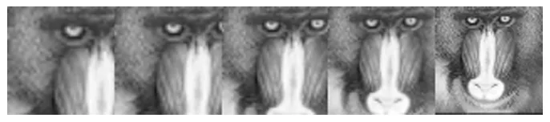
Hình 11 Ngân hàng ảnh cho phép thay đổi tỷ lệ
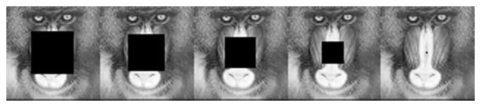
Hình 12 Ngân hàng ảnh cho phép che khuất
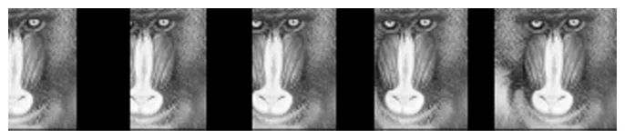
Hình 13 Ngân hàng ảnh cho ảnh tịnh tiến
và khóa ở mức tham chiếu trong vòng ba lần thử, ngược lại nó được coi là không thành công. Trong một lần thử, hệ thống AOR được coi là nhận dạng được đối tượng nếu nó có thể duy trì trạng thái ở mức tham chiếu trong 5 bước. Trong 100 lần chạy, trọng số mạng được đặt ở các điều kiện ban đầu ngẫu nhiên khi bắt đầu mỗi quá trình học. Nếu một lần chạy thành công, số lần thử cần thiết để thực hiện nhiệm vụ đó sẽ được ghi lại. Số lần thử trong bảng thu được bằng cách tính trung bình trên tất cả các lần chạy thành công. Nếu một lần thử thành công, số bước cần thiết để thực hiện một quá trình học thành công cũng được ghi lại, và số bước trung bình trong bảng tương ứng với giá trị trung bình trên tất cả các lần thử thành công. Tỷ lệ thành công cũng được hiển thị dưới dạng phần trăm số lần chạy thành công trên 100. Một hệ thống học tốt là hệ thống có tỷ lệ phần trăm thành công cao cũng như số lần thử trung bình và số bước cần thiết để thực hiện nhiệm vụ nhận dạng thấp. Kết quả thống kê cho cả hai thiết kế được tóm tắt trong Bảng 1. Từ Bảng 1, chúng ta có thể quan sát thấy rằng nhìn chung tỷ lệ thành công của HDP cao hơn; chỉ trong trường hợp đa độ phân giải, DHP hoạt động tốt hơn một chút. Về số lần thử trung bình cần thiết để thực hiện quá trình học thành công, HDP tốt hơn ở chỗ trung bình nó cần ít lần thử hơn DHP. So sánh số bước trung bình để thực hiện một lần chạy thành công, trong tất cả các trường hợp, số bước trung bình của DHP ít hơn của HDP. Điều này nhất quán với đặc điểm của DHP là một thuật toán học gia tăng và có thể học
Bảng 1 So sánh tỷ lệ thành công cho các phép biến đổi khác nhau trong ảnh Thuật toán Biến đổi Tỷ lệ thành công Số lần thử TB Số bước TB
Đa độ phân giải 98% 1.04 5.56
Tỷ lệ 97% 1.15 6.47
HDP Che khuất 100% 1.00 5.50
Tịnh tiến 100% 1.06 5.74
Xoay 90◦ 100% 1.04 10.20
Xoay 180◦ 100% 1.10 11.50
Đa độ phân giải 100% 1.80 5.04 Tỷ lệ 74% 2.18 5.12
DHP Che khuất 72% 2.27 5.15
Tịnh tiến 76% 2.09 5.96
Xoay 90◦ 78% 2.04 9.69
Xoay 180◦ 68% 2.54 10.30 nhanh hơn HDP. Sự so sánh này có thể được xem như một sự đánh đổi trong thiết kế các thuật toán học giữa tốc độ và độ chính xác.
3.5 Đánh giá HDP và DHP cho Xác thực Khuôn mặt Sử dụng Cơ sở dữ liệu UMIST
Trong phần này, chúng tôi đánh giá các thiết kế AOR dựa trên HDP và DHP cho bài toán xác thực khuôn mặt sử dụng cơ sở dữ liệu khuôn mặt UMIST [28]. Việc xác thực khuôn mặt chính xác và nhanh chóng đóng vai trò then chốt trong các ứng dụng liên quan đến nhận dạng và xác minh cá nhân. Việc thu thập dữ liệu cho mục đích xác thực cá nhân bao gồm dữ liệu khuôn mặt 2-D và 3-D, cùng nhiều loại sinh trắc học khác. Việc kết hợp dữ liệu từ các nguồn khác nhau trong quá trình này có thể cải thiện đáng kể hiệu năng xác thực khuôn mặt [29]. Xác thực khuôn mặt sử dụng dữ liệu 2-D đã được nhiều nhà nghiên cứu khám phá rộng rãi [29]. Trong phần này, dữ liệu khuôn mặt 2-D trong cơ sở dữ liệu UMIST được sử dụng.
Cơ sở dữ liệu UMIST bao gồm dữ liệu khuôn mặt 2-D của 20 người, mỗi người có một loạt các tư thế từ góc nhìn nghiêng đến góc nhìn chính diện. Các đối tượng được gắn nhãn là ‘1a’, ‘1b’ đến ‘1t’. Các ảnh khuôn mặt gốc có định dạng PGM, kích thước xấp xỉ 220×220 pixel với 256 mức xám [28]. Các ảnh khuôn mặt được cắt về kích thước đồng nhất là 112 × 92 pixel. Phiên bản đã cắt của cơ sở dữ liệu khuôn mặt được khai thác để đánh giá hiệu năng của cả hai thiết kế HDP và DHP đối với bài toán xác thực khuôn mặt có xoay ngoài mặt phẳng. Để quản lý tập dữ liệu khuôn mặt tốt hơn (tức là làm cho việc sắp xếp dữ liệu tương đồng với thiết lập của chúng tôi như đã mô tả ở trên), chúng tôi nhóm chuỗi ảnh theo mẫu xoay 90◦ như sau. Các chuỗi có góc xoay lớn hơn 90◦ được cắt bớt; trong khi các chuỗi có góc xoay 180◦ được chia thành hai chuỗi con xoay 90◦. Các mảng ảnh thu được sau đó được sắp xếp theo chiều xoay 90◦ từ góc nhìn nghiêng sang góc nhìn chính diện trước khi đưa vào hệ thống AOR làm các trạng thái hệ thống. Chuỗi ảnh được sử dụng cho đối tượng ‘1a’ được trình bày trong Hình 14. Các ảnh gốc của đối tượng này có thể được tìm thấy tại http://images.ee.umist.ac.uk/danny/database.html. Các ảnh được sử dụng trong chương này là một chuỗi đã cắt gồm 34 ảnh đầu tiên của đối tượng ‘1a’, ghi lại góc xoay 90◦ từ góc nhìn nghiêng bên phải sang góc nhìn chính diện của đối tượng.
Kết quả thống kê của các thí nghiệm mô phỏng cho các đối tượng khác nhau trong cơ sở dữ liệu UMIST được tóm tắt trong Bảng 2. Khi so sánh hiệu năng của cả hai thiết kế của chúng tôi cho bài toán xác thực khuôn mặt sử dụng cơ sở dữ liệu UMIST, chúng tôi nhận thấy rằng tính trung bình, tỷ lệ thành công tổng thể của HDP trên tất cả các đối tượng là cao hơn. Tuy nhiên, AOR dựa trên DHP đạt được tỷ lệ thành công 100% thường xuyên hơn (tần suất cao hơn).
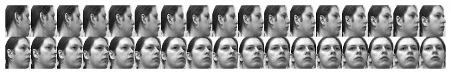
Hình 14 Chuỗi ảnh mẫu cho đối tượng ‘1a’ trong cơ sở dữ liệu UMIST [28]
Bảng 2 Tỷ lệ thành công của DHP đối với cơ sở dữ liệu UMIST khi không có nhiễu
Thuật toán Đối tượng Tỷ lệ thành công Số lần thử TB Số bước TB
1a 89% 1.22 34.03 1b 98% 1.06 10.39 1c 95% 1.11 26.42 1d 93% 1.23 27.02 1e 99% 1.02 26.10 1f 94% 1.12 23.04 1ga (chuỗi con 1) 99% 1.05 8.51 1gb (chuỗi con 2) 100% 1.00 8.08 1h 98% 1.05 22.30 1ia (chuỗi con 1) 100% 1.00 12.06 1ib (chuỗi con 2) 98% 1.05 8.19 HDP 1j 98% 1.06 24.73 1k 94% 1.14 34.93 1l 87% 1.70 54.08 1m 86% 1.28 26.01 1na (chuỗi con 1) 92% 1.16 8.04 1nb (chuỗi con 2) 91% 1.18 11.02 1o 97% 1.06 14.02 1p 94% 1.16 22.87 1q 94% 1.28 31.69 1r 92% 1.16 33.05 1s 91% 1.19 48.16 1t 97% 1.06 24.11
1a 100% 1.81 60.96 1b 74% 2.04 26.79 1c 100% 2.11 53.13 1d 100% 2.07 49.95 1e 100% 1.03 26.23 1f 98% 2.18 51.21 1ga (chuỗi con 1) 36% 2.28 9.31 1gb (chuỗi con 2) 39% 2.22 9.67 1h 100% 2.24 51.87 1ia (chuỗi con 1) 48% 2.14 17.60 1ib (chuỗi con 2) 43% 2.24 9.21 DHP 1j 97% 2.28 54.37 1k 100% 1.85 63.45 1l 100% 1.85 62.31 1m 98% 2.32 57.57 1na (chuỗi con 1) 45% 2.10 9.69 1nb (chuỗi con 2) 47% 2.08 13.21 1o 76% 2.10 33.96 1p 98% 2.24 51.65 1q 97% 2.15 53.54 1r 97% 1.98 64.28 1s 100% 1.61 76.96 1t 98% 2.18 52.40
Xuyên suốt các mô phỏng theo lô cho tất cả các đối tượng khác nhau, số lần thử trung bình để thực hiện một lần chạy thành công trong DHP nhiều hơn so với HDP, và số bước trung bình cần thiết để DHP hoàn thành một lần chạy thành công cũng lớn hơn so với HDP. Do đó, nhìn chung HDP nhanh hơn và bền vững hơn DHP trên sự biến thiên của dữ liệu đối tượng. Tuy nhiên, DHP mang lại khả năng xác thực khuôn mặt chính xác 100% thường xuyên hơn cho nhiều đối tượng hơn trong cơ sở dữ liệu. Điều này cũng minh họa sự đánh đổi trong quá trình học giữa tính bền vững nói chung và độ chính xác trong một trường hợp cụ thể.
4 Kết luận và Hướng Nghiên cứu Tương lai
Trong chương này, chúng tôi đã thảo luận về một mô hình mạng nơ-ron lấy cảm hứng từ sinh học mới cho hệ thống AOR động. Hệ thống AOR được đề xuất khai thác khung ACD sử dụng phương pháp tiếp cận RL cho bài toán nhận dạng đối tượng bất biến với phép biến đổi và xác thực khuôn mặt. Hai thuật toán RL là HDP và DHP đã được triển khai và phân tích. Các kết quả mô phỏng chứng minh rằng RL là một công cụ hiệu quả cho việc nhận dạng và xác thực đối tượng bất biến với phép biến đổi một cách thích nghi. Khi so sánh hai thuật toán, AOR dựa trên DHP vượt trội hơn HDP trong các trường hợp cụ thể, nhưng không bền vững bằng HDP xét về tỷ lệ thành công. Các hướng nghiên cứu trong tương lai bao gồm cải thiện động lực học hệ thống đơn giản hóa hiện tại thành một mô hình thực tế hơn, sao cho hệ thống AOR có thể xử lý đồng thời nhiều phép biến đổi trên đối tượng. Hơn nữa, một hệ thống AOR dựa trên đặc trưng thay vì hệ thống dựa trên ảnh hiện tại cũng có thể được mong muốn nhằm giảm độ phức tạp tính toán.
Lời cảm ơn Các tác giả xin trân trọng cảm ơn sự hỗ trợ một phần từ quỹ tài trợ Herff, và các cuộc thảo luận thân mật với các đồng nghiệp tại Phòng thí nghiệm Nghiên cứu Không quân Wright Patterson, Dayton, OH.
Tài liệu Tham khảo
1. Casasent, D., Psaltis, D.: Position, rotation and scale invariant optical correlator. Appl. Opt. 15 (1976) 1795–1799 2. Iftekharuddin, K. M., Ahmed, F., Karim, M.A.: Amplitude-coupled mace for automatic target recognition applications. Opt. Engr. 35 (1996) 1009–1014 3. Fuji, H., Almeida, S.P., Dowling, J.E.: Rotational matched spatial filter for biological pattern recognition. Appl. Opt. 19 (1980) 1190–1195 4. Diab, S.L., Karim, M.A., Iftekharuddin, K.M.: Multi-object detection of targets with fine details, scale and translation variations. Opt. Engr. 37 (1998) 876–883 5. Wei, G.Q., Qian, J., Schramm, H.: A dual dynamic programming approach to the detection of spine boundaries. Lecture Notes In Computer Science, Proceedings of the 4th International Conference on Medical Image Computing and Computer-Assisted Intervention 2208 (2001) 524–531 6. Schmid, C., Mohr, R.: Matching by local invariants. Reseach report, robotics, image and vision N2644, INRIA-Rhône-Alps, 46 Ave Felix Viallet, 38031 Grenoble Cedex 1 (France) (1995) 7. Bryant, M.L., Worrell, S.W., Dixon, A.C.: MSE template size analysis for MSTAR data. In
Zelnio, E.G., ed.: Algorithms for synthetic aperture radar imagery V, Proc. of SPIE. Volume 3370. (1998) 396–405 8. Iftekharuddin, K.M., Power, G.: A biological model for distortion invariant target recognition. In: Proc. of IJCNN, Washington DC, U.S.A., IEEE Press (2001) 559–564 9. Iftekharuddin, K.M., Rentala, C., Dani, A.: Determination of exact rotation angle and discrimination for rotated images. Optics & Laser Technology 34 (2002) 313–327 10. Iftekharuddin, K.M., Malhotra, R.P.: Role of multiresolution attention in automated object recognition. In: Proc. of IJCNN, Hawaii, U.S.A., IEEE Press (2002) 2225–2230 11. Iftekharuddin, K.M., Widjanarko, T.: Reinforcement learning in multiresolution object recognition. In: Proc. of IJCNN. Volume 2., Hawaii, U.S.A., IEEE Press (2004) 1085–1090 12. Siddiqui, F., Iftekharuddin, K.M.: Multiresolution object recognition using dual heuristic programming. In: Proc. of IJCNN. (2006) 13. Ge, Z.: Automated target recognition by reinforcement learning without a prior model. Ph.D. thesis, Texas Technological University, Lubbock, TX, USA (1997) 14. Sutton, R.S., Barto, A.G., Williams, R.J.: Reinforcement learning is direct adaptive optimal control. In: Proceedings of 1991 IEEE American Control Conference. (1991) 15. Tsitsiklis, J.N., Van Roy, B.: Feature-based methods for large scale dynamic programming. In: Machine Learning. Volume 22. Springer Netherlands (1994) 59–94 16. Marbach, P., Tsitsiklis, J.N.: Simulation-based optimization of markov reward processes. IEEE Trans. Auto. Contr. 46 (2) (2001) 191–209 17. Van Roy, B.: Neuro-dynamic programming: overview and recent trends. Handbook of Markov Decision Processes: Methods andApplications (2001) 18. Bertsekas, D.P.: Dynamic programming: deterministic and stochastic models. Printice Hall, Englewood Cliffs, NJ, U.S.A. (1987) 19. Bertsekas, D.P., Tsitsiklis, J.N.: Neuro-dynamic programming. Athena Scientific, Belmont, MA (1996) 20. Ens, R., Si, J.: Apache helicopter stabilization using neuro dynamic programming. Report G6316, AIAA (2000) 21. Si, J., Wang, Y.T.: On-line learning control by association and reinforcement. IEEE Trans. Neural Networks 12(2) (2001) 264–276 22. Venayagamoorthy, G.K., Harley, R.G., Wunsch, D.C.: Implementation of adaptive critic based neurocontrollers for turbogenerators in a multimachine power system. IEEE Trans. Neural Networks 15(5) (2003) 1047–1064 23. Liu, W., Venayagamoorthy, G.K., Wunsch, D.C.: A heuristic dynamic programming based power system stabilizer for a turbogenerator in a single machine power system. In: IEEE-IAS 38th Annual Meeting. (2003) 24. Prokhorov, D., Wunsch, D.C.: Adaptive critic designs. IEEE Trans. Neural Networks 8 (5) (1997) 997–1007 25. Bellman, R.E.: Dynamic programming. Princeton University Press, Princeton, NJ, U.S.A. (1957) 26. Iftekharuddin, K.M.: Attention-driven object recognition. Final report AFSOR Grant# F33615-01-C-1985, Wright Patterson AF Lab (2001) 27. Schultz, W.: Predictive reward signal of dopamine neuron. J. Neurophysiology 80 (1998) 1–27 28. Graham, D.B., Allinson, N.M.: Characterizing virtual eigensignatures for general purpose face recognition. In H. Wechsler, P. J. Phillips, V.B.F.F.S., Huang, T.S., eds.: Face Recognition: From Theory to Applications. Volume 163 of F, Computer and Systems Sciences. NATO ASI (1998) 446–456 29. K. Chang, K.W.B., Flynn, P.J.: Face recognition using 2d and 3d facial data. In: ACM Workshop on Multimodal User Authentication. (2003) 25–32
Phụ lục A: Toán học về Động lực học HDP
Mục tiêu của mạng phê bình là xấp xỉ hàm tổng chi phí tương lai được chiết khấu R(t), cho bởi
R(t) = r(t + 1) + αr(t + 2) + · · · (5)
trong đó R(t) là chi phí tương lai được chiết khấu tích lũy đánh giá tại thời điểm t, và r(t) là giá trị tăng cường bên ngoài tại thời điểm t. Hệ số chiết khấu α nằm giữa 0 và 1. Các trọng số của mạng phê bình được điều chỉnh để xấp xỉ hàm chi phí tương lai. Điều này đạt được bằng cách sử dụng phương trình Bellman sửa đổi cho bởi [11, 21]
J ∗(X(t)) = min
J ∗(X(t + 1)) + g(X(t), X(t + 1)) −U0
(6)
u(t)
trong đó g(X(t), X(t +1)) là chi phí tức thời phát sinh bởi hành động u(t) tại thời điểm t. Đối với mạng phê bình, mục tiêu của nó là tối thiểu hóa sai số phê bình [11, 21],
Ec(t) = 1
2 e2 c(t) = 1
2 {αJ(t) −[J(t −1) −r(t)]}2 . (7)
Quy tắc cập nhật trọng số cho mạng phê bình là [11, 21], wc(t + 1) = wc(t) + wc(t) (8)
trong đó,
−∂Ec(t)
wc(t) = lc(t)
(9)
∂wc(t)
và lc(t) là tốc độ học của mạng phê bình tại thời điểm t.
Quy tắc cập nhật trọng số cho mạng hành động tuân theo tương tự [21, 11, 12], wa(t + 1) = wa(t) + wa(t) (10)
trong đó,
−∂Ea(t)
wa(t) = la(t)
(11)
∂wa(t)
và la(t) là tốc độ học của mạng hành động tại thời điểm t, và sai số tức thời cần tối thiểu hóa là,
Ea(t) = 1
2 e2 a(t) = 1
2 [J(t) −Uc(t)]2 . (12)
Đối với mạng phê bình trình bày trong Hình 3, đầu ra J(t) là [11, 21],
Nh
w(2)
J(t) =
ci (t)pi(t) (13)
i=1 trong đó, pi(t) = 1 −exp−qi(t)
1 + exp−qi(t) , i = 1, 2, · · · , Nh và (14)
n+1 w(1)
qi(t) = cij (t)x j(t), i = 1, 2, · · · , Nh; (15)
j=1 trong đó, qi là đầu vào nút ẩn thứ i vào mạng phê bình pi là đầu ra tương ứng thứ i của nút ẩn
Nh là số nút ẩn trong mạng phê bình n + 1 là tổng số đầu vào của mạng phê bình
Bằng cách áp dụng quy tắc dây chuyền, quy tắc cập nhật trọng số cho mạng phê bình như sau:
−∂Ec(t)
wc(t) = lc(t)
(16)
∂wc(t)
trong đó,
∂Ec(t) ∂wc(t) = ∂Ec(t)
∂J(t) ∂wc(t) = αec(t) ∂J(t)
∂wc(t); (17)
∂J(t)
và quy tắc cập nhật trọng số là,
w(2)
ci : từ lớp ẩn đến lớp đầu ra ci (t) = −lc(t)αec(t) ∂J(t)
w(2)
(18)
∂w(2)
ci (t)
∂J(t)
= pi(t) (19)
∂w(2)
ci (t)
w(1)
cij : từ lớp đầu vào đến lớp ẩn cij (t) = −lc(t)α ec(t) ∂J(t)
w(1)
(20)
∂w(1)
ci (t)
1
∂J(t)
= ∂J(t)
∂pi(t)
∂qi(t)
= w(2)
2(1 −p2 i (t))
ci (t)
x j(t) (21)
∂w(1)
∂w(1)
∂pi(t)
∂qi(t)
ci (t)
cij (t)
Mạng hành động được triển khai tương tự bằng một mạng nơ-ron truyền thẳng, đầu vào của nó là trạng thái n-chiều, và đầu ra là giá trị hành động u(t) tại thời điểm t [11, 12, 21].
u(t) = 1 −exp−v(t)
1 + exp−v(t) (22)
trong đó,
Nh
w(2)
v(t) = ai (t)gi(t), (23)
i=1 gi(t) = 1 −exp−hi(t)
1 + exp−hi(t) , i = 1, 2, · · · , Nh và (24)
n+1 w(1)
hi(t) = aij (t)x j(t), i = 1, 2, · · · , Nh (25)
j=1 trong đó v, g và h lần lượt là v đầu vào của nút hành động gi đầu ra của các nút ẩn hi đầu vào của các nút ẩn
Quy tắc cập nhật trọng số cho mạng hành động tuân theo tương tự.
−∂Ea(t)
wa(t) = la(t)
(26)
∂wa(t)
trong đó,
∂Ea(t) ∂wa(t) = ∂Ea(t)
∂J(t) ∂wa(t) = ea(t) ∂J(t)
∂wa(t) (27)
∂J(t)
và,
w(2)
ai : từ lớp ẩn đến lớp đầu ra ai (t) = −la(t)ea(t) ∂J(t)
w(2)
(28)
∂w(2)
ai (t)
∂J(t)
= ∂J(t)
∂u(t) ∂v(t)
∂v(t)
(29)
∂w(2)
∂w(2)
∂u(t)
ai (t)
ai (t)
1
2(1 −u2(t))
Nh
ci (t) 1 w(2)
w(1)
1 −p2 i (t)
= gi(t)
ci,n+1(t)
(30)
2 i=1
w(1)
aij : từ lớp đầu vào đến lớp ẩn aij (t) = −la(t)ea(t) ∂J(t)
w(1)
(31)
∂w(1)
aij (t)
∂J(t)
= ∂J(t)
∂u(t) ∂v(t)
∂v(t) ∂gi(t)
∂gi(t) ∂hi(t)
∂hi(t)
(32)
∂w(1)
∂w(1)
∂u(t)
aij (t)
aij (t)
1
1 w(2)
2(1 −u2 i (t))
2(1 −g2 i (t))
= ai (t)
(33)
Nh
ci (t) 1 w(2)
w(1)
1 −p2 i (t)
x j(t) · ci,n+1(t)
. (34)
2 i=1
Phụ lục B: Toán học về Động lực học DHP
Đối với DHP, sai số dự đoán của mạng phê bình được định nghĩa như trong [12], ec(t) = ∂J(t)
∂X(t) −α ∂J(t + 1)
∂X(t) −∂r(t)
∂X(t), (B-1)
và hàm mục tiêu cần tối thiểu hóa trong mạng phê bình là,
ec(t)eT
Ec(t) =
c (t). (B-2)
Trong quá trình huấn luyện mạng, một giá trị mục tiêu được tạo ra cho đầu ra của mạng phê bình như sau [12],
∂r(t) + α∂J(t + 1)
s (t) = ∂J(t)
λo
∂Xs(t) =
. (B-3)
∂Xs(t)
Áp dụng quy tắc dây chuyền cho ta,
∂Xs(t + 1)
s(t) = ∂r(t)
∂Xs(t) + α ∂J(t + 1)
∂Xs(t) + ∂Xs(t + 1)
∂u(t) ∂Xs(t)
λo
. (B-4)
∂Xs(t + 1)
∂u(t)
Quy tắc cập nhật trọng số cho mạng phê bình là [12]
wc(t + 1) = wc(t) + wc(t) (B-5)
trong đó,
−∂Ec(t)
wc(t) = lc(t)
và (B-6)
∂wc(t)
∂Ec(t) ∂wc(t) = ∂Ec(t)
∂J(t) ∂wc(t). (B-7)
∂J(t)
Ở đây lc(t) là tốc độ học của mạng phê bình tại thời điểm t. Trong quá trình này, các đạo hàm của vector trạng thái được xấp xỉ bằng các sai phân của nó như sau,
∂X(t + 1)
∂X(t) = X(t + 1) −X(t)
X(t) −X(t −1). (B-8)
Cấu trúc và quy tắc cập nhật trọng số cho mạng hành động tuân theo [12], wa(t + 1) = wa(t) + wa(t), (B-9)
trong đó,
−∂J(t)
wa(t) = la(t)
, và, (B-10)
∂wa(t)
∂J(t) ∂wa(t) = ∂J(t)
∂u(t) ∂wa(t), (B-11)
∂u(t)
trong đó la(t) là tốc độ học của mạng hành động tại thời điểm t,
∂J(t) ∂u(t) = ∂r(t)
∂u(t) + α ∂J(t + 1)
∂u(t) , (B-12)
và
∂J(t + 1)
∂u(t) = ∂J(t + 1)
∂X(t + 1)
∂u(t) . (B-13)
∂X(t + 1)
Một Mô hình Lấy cảm hứng từ Não bộ để Nhận dạng Trạng thái Cảm xúc Con người từ Biểu cảm Khuôn mặt
Jia-Jun Wong và Siu-Yeung Cho
1 Giới thiệu
Cảm xúc đóng vai trò thiết yếu trong xã hội loài người. Khả năng thấu hiểu, diễn giải và phản ứng với cảm xúc là điều sống còn trong việc duy trì các mối quan hệ với bạn bè, đồng nghiệp và gia đình [1, 2, 3]. Ngày càng có nhiều bằng chứng cho thấy cảm xúc đóng một vai trò trong việc ra quyết định, nhận thức và sự thấu hiểu đồng cảm theo cách ảnh hưởng đến các chức năng trí tuệ [4, 5, 6]. Phần lớn mọi người có thể diễn giải cảm xúc do người khác thể hiện trong hầu hết thời gian, nhưng có những người thiếu khả năng này, chẳng hạn như những người được chẩn đoán thuộc phổ tự kỷ [7]. Ví dụ, bệnh nhân mắc hội chứng Capgras [8] từng bị chấn thương đầu và bị đứt liên kết giữa vỏ não thị giác và hệ viền, cho rằng gia đình và bạn bè đã bị thay thế bởi những kẻ mạo danh vì họ không thể cảm nhận bất kỳ cảm xúc nào đối với những người này. Điều này là do quá trình nhận dạng ngầm vô thức (liên quan đến cảm xúc) bị ngắt kết nối trong khi quá trình nhận dạng có ý thức (liên quan đến các mô-đun não bộ để nhận diện con người) vẫn còn kết nối [8]. Tương tác giữa nhận thức và cảm xúc là một trong những lĩnh vực nghiên cứu được tranh luận nhiều nhất trong tâm lý học. Perlovsky thảo luận về vô số biến thể của cảm xúc thẩm mỹ liên quan đến các quá trình nhận thức [9]. Các nhà nghiên cứu về đánh giá nhận thức (appraisal) đã chỉ ra rằng cảm xúc được tạo ra bởi bất kỳ sự kiện nào đều phụ thuộc vào những gì được đánh giá [10]. Ekman đã xác định sáu nhóm cảm xúc cơ bản [10] (tức là sợ hãi, giận dữ, buồn bã, ngạc nhiên, ghê tởm và vui sướng). Ở đây chúng tôi tập trung vào việc nhận dạng biểu cảm khuôn mặt của các cảm xúc này.
Hình 1 cho thấy một đối tượng đang thể hiện sáu cảm xúc cơ bản. Những cảm xúc như vậy được bộc lộ sớm hơn qua biểu cảm khuôn mặt trước khi con người diễn đạt bằng lời nói hoặc thậm chí nhận ra trạng thái cảm xúc của chính mình [11]. Ekman đã chỉ ra cách sử dụng biểu cảm khuôn mặt để phát hiện lời nói dối [12].
Schachter [13] đã chỉ ra cách não bộ diễn giải các phản ứng của cơ thể thành cảm xúc. Các kích thích cảm xúc kích hoạt các đường dẫn truyền cảm giác, từ đó kích hoạt vùng dưới đồi của não bộ để điều hòa nhịp tim, huyết áp và hô hấp. Davis [14] đã xác định hạch hạnh nhân (một phần của hệ viền) và cấu trúc hồi hải mã là trung tâm của mức độ nhận thức cảm xúc có ý thức. Vỏ não trước trán đưa ra quyết định có ý thức dựa trên thông tin từ trí nhớ ngữ nghĩa liên kết và không liên kết trong tân vỏ não và hồi hải mã. Trong một nghiên cứu từ não đồ (MEG) [15], việc phán đoán cảm xúc từ
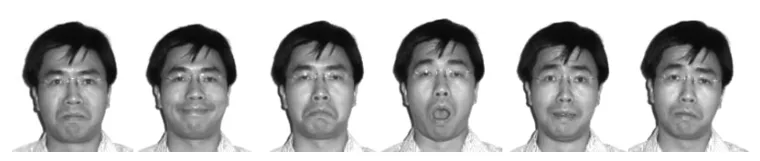
Hình 1 Sáu cảm xúc cơ bản (từ trái sang phải): giận dữ, vui sướng, buồn bã, ngạc nhiên, sợ hãi và ghê tởm. (Ảnh lấy từ cơ sở dữ liệu cảm xúc châu Á NTU)
biểu cảm ban đầu gợi lên phản ứng mạnh hơn, so với việc phát hiện khuôn mặt đơn thuần, tại vỏ não thái dương trên phía sau.
Trong chương này, chúng tôi sử dụng một khung làm việc như minh họa trong Hình 2, dựa trên Hệ thống Nhận dạng Cảm xúc của Wong và Cho trong [16], đại diện cho cấu trúc nhận thức – thần kinh của não bộ để nhận dạng cảm xúc qua biểu cảm khuôn mặt [17]. Trong khung làm việc lấy cảm hứng từ não bộ này, khối phát hiện khuôn mặt và trích xuất đặc trưng được xây dựng để mô hình hóa các chức năng của vỏ não thị giác. Các bước tiền xử lý nhằm phát hiện và theo dõi khuôn mặt. Chúng tôi sử dụng bộ phát hiện khuôn mặt và đặc trưng của thư viện Intel Open CV để định vị khuôn mặt và 4 điểm chuẩn (tức là Mắt, Mũi và Miệng). Bộ phát hiện khuôn mặt và đặc trưng Open CV triển khai thuật toán Viola và Jones [18], sử dụng bộ phân loại AdaBoost [19] với các đặc trưng giống Haar để phát hiện khuôn mặt và các điểm chuẩn. Biến đổi wavelet Gabor được sử dụng làm bộ trích xuất đặc trưng với biên dạng đáp ứng bộ lọc thực nghiệm xấp xỉ gặp ở các nơ-ron vỏ não [20]. Wavelet Gabor có khả năng nắm bắt các tính chất về định vị không gian, tính chọn lọc hướng, tính chọn lọc tần số không gian và mối quan hệ pha cầu phương.
Biểu diễn từ bộ trích xuất đặc trưng Gabor không tính đến bất kỳ mối quan hệ nào có thể có giữa các thành phần khuôn mặt. Do đó, chúng tôi đề xuất chuyển đổi các đặc trưng Gabor sang Cấu trúc Cây Cảm xúc Khuôn mặt (FEETS) [21], mô hình hóa các chức năng của Vỏ não Liên hợp Cảm giác [22]. Hệ thống Mã hóa Hành động Khuôn mặt (FACS) của Ekman [23] đã cung cấp nền tảng, xác định các Vùng Quan tâm (ROI) để trích xuất đặc trưng. Các đặc trưng ROI được thu nhận trong vector Đặc trưng Gabor Cục bộ (LGF) và được chuyển đổi thành biểu diễn cấu trúc cây. Bằng cách sử dụng biểu diễn FEETS này, chúng tôi có thể mã hóa thông tin về mối quan hệ đặc trưng giữa các đặc trưng khuôn mặt. Thông tin mối quan hệ này bị mất trong một cấu trúc dữ liệu tĩnh như các đặc trưng dạng vector phẳng hoặc mảng truyền thống.
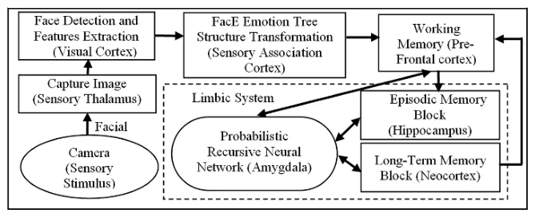
Hình 2 Sơ đồ hệ thống nhận dạng cảm xúc trong [16]
Việc xử lý truyền thống bằng các phương pháp học máy [24, 25] thường được thực hiện bằng biểu diễn tuần tự. Tuy nhiên, hai nhược điểm lớn đã được nhấn mạnh trong [26]. Thứ nhất là khả năng tổng quát hóa kém, có thể do việc ánh xạ tuần tự các cấu trúc dữ liệu gây ra. Cần thiết phải xác định tính quy luật gắn liền một cách tự nhiên với cấu trúc dữ liệu. Thứ hai là sự phụ thuộc dài hạn, khi số lượng nút tăng theo cấp số nhân theo độ sâu của cây, dẫn đến hiệu suất học thấp với số lượng lớn tham số. Trong nghiên cứu này, một Mạng Nơ-ron Đệ quy Xác suất (PRNN) được sử dụng để mô hình hóa các chức năng của hạch hạnh nhân con người nhằm nhận dạng cảm xúc từ biểu cảm khuôn mặt. PRNN được mở rộng từ Frasconi và cộng sự [27], được sử dụng để xử lý thích nghi các Cấu trúc Cây Cảm xúc Khuôn mặt (FEETS); các tham số của PRNN được học từ các đặc trưng và được lưu trữ trong trí nhớ dài hạn trong pha huấn luyện; điều này có thể mô hình hóa thông tin được lưu trữ trong hồi hải mã. Trong pha nhận dạng, các tham số đã học được nạp vào trí nhớ làm việc, và trạng thái cảm xúc được nhận dạng từ các tham số đã học bởi PRNN; điều này có thể mô hình hóa các quá trình diễn ra trong hạch hạnh nhân.
2 Biểu diễn FEETS
Phần này mô tả quá trình chuyển đổi Cấu trúc Cây Cảm xúc Khuôn mặt (FEETS).
2.1 Biểu diễn Đặc trưng
Hệ thống mã hóa hành động khuôn mặt (FACS) của Ekman [23] đã cung cấp nền tảng cho các thành phần khuôn mặt chủ đạo cần quan tâm nhằm nhận dạng biểu cảm khuôn mặt con người. Trong công trình này, chúng tôi sử dụng khái niệm tương tự về các thành phần khuôn mặt cần quan tâm để trích xuất các đặc trưng khuôn mặt nhằm biểu diễn khuôn mặt người. Những vùng quan tâm này là thiết yếu để cung cấp dấu hiệu rõ ràng về biểu cảm của khuôn mặt người trong ảnh. Hầu hết các hệ thống máy tính đều tiếp nhận đặc trưng dưới dạng đầu vào vector phẳng hoặc mảng, điều này rất khác đối với hệ thống nhận thức của con người. Não bộ con người xử lý thông tin không theo cách tuần tự hay phân tích toàn bộ dữ liệu để đưa ra phản ứng nhận thức. Nó xử lý thông tin song song và có các mạng kết nối tại từng lát cắt thông tin để tạo ra phản ứng toàn cục. Đây là lý do tại sao con người bền vững hơn trong việc nhận dạng hình ảnh, vì ít nhiều không phải tất cả các đặc trưng đều khả dụng do sự xoay chuyển của đối tượng.
Chúng tôi dự định mô hình hóa chức năng nhận thức của não bộ con người bằng cách sử dụng cấu trúc cây để trình bày thông tin mối quan hệ giữa các đặc trưng từ mức độ thô đến chi tiết tinh vi, được biểu diễn bởi vector Đặc trưng Gabor Cục bộ. Trong cách tiếp cận này, cảm xúc khuôn mặt có thể được biểu diễn bằng một mô hình cấu trúc cây sâu 5 cấp như minh họa trong Hình 3, toàn bộ vùng khuôn mặt đóng vai trò là nút gốc và các đặc trưng cục bộ bao gồm phần trên và phần dưới khuôn mặt cùng bên trái, bên phải và trung tâm của khuôn mặt trở thành các nút nhánh cấp hai. Ở các nút cấp ba, vùng trán, mắt, mũi, miệng và má trở thành các nút nhánh tương ứng. Ở cấp bốn, trán, mắt, lông mày, mũi, má và miệng đóng vai trò là các nút phân nhánh cho các nút cấp ba.
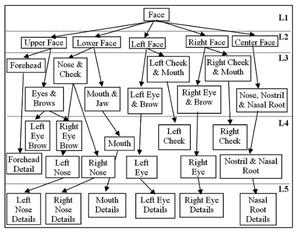
Hình 3 Biểu diễn cấu trúc cây cảm xúc khuôn mặt
Các đặc trưng chi tiết con từ 4 điểm chuẩn chính tạo thành các lá của cấu trúc cây. Các đặc trưng được trích xuất được nhóm lại và gắn vào các nút tương ứng như minh họa trong Hình 3. Cấu trúc cây thực tế sẽ có nhiều nhánh và cung kết nối hơn. Các cung giữa mỗi nút tương ứng với mối quan hệ đặc trưng được sử dụng để biểu diễn ngữ nghĩa của các thành phần khuôn mặt con người.
Nếu khuôn mặt của một đối tượng bị xoay ở tư thế nửa nghiêng, 45 độ theo bất kỳ hướng nào, điều này sẽ khiến bất kỳ bộ định vị đặc trưng nào tìm kiếm một trong hai mắt bị thất bại, tức là các đặc trưng liên quan đến mắt đó sẽ không thể trích xuất được hoặc bị trích xuất sai vị trí. Trong biểu diễn Cấu trúc Cây Cảm xúc Khuôn mặt (FEETS), chỉ những nhánh liên quan đến vị trí đặc trưng này mới không khả dụng. Thông thường chỉ ảnh hưởng đến các nút từ cấp 4 và cấp 5, vì các đặc trưng này đòi hỏi vị trí chính xác của các điểm chuẩn. Cấp 1 đến cấp 3 phụ thuộc vào vị trí của vùng khuôn mặt, vốn thường dễ xác định hơn và ít bị ảnh hưởng bởi các biến đổi tư thế.
Ngoài ra, nếu khuôn mặt của đối tượng bị che bởi kính râm hoặc đeo khăn che mặt, các vùng mắt, mũi và miệng sẽ không thể phát hiện được bởi bộ định vị đặc trưng. Nhưng đối với con người, việc nhận dạng cảm xúc từ một khuôn mặt như vậy sẽ không quá khó khăn, vì não người không cần toàn bộ các vùng trên khuôn mặt phải được bộc lộ để dự đoán/đoán cảm xúc mà người đó thể hiện. Tương tự, cách tiếp cận sử dụng biểu diễn FEETS nhằm giải quyết sự phụ thuộc vào tính đầy đủ của thông tin trước khi có thể đưa ra nhận dạng chính xác.
2.2 Trích xuất Đặc trưng
Chúng ta cần một phương pháp trích xuất đặc trưng mô hình hóa hoặc xấp xỉ hệ thống thị giác của con người. Wavelet Gabor, vốn nắm bắt các tính chất về định vị không gian, tính chọn lọc hướng, tính chọn lọc tần số không gian và mối quan hệ pha cầu phương, dường như là một phép xấp xỉ tốt cho các biên dạng đáp ứng bộ lọc gặp phải trong thực nghiệm ở các nơ-ron vỏ não [20]. Chúng tôi sử dụng một bộ lọc toàn cục được định nghĩa trước dựa trên các wavelet Gabor hai chiều g(x, y), có thể được định nghĩa như sau [28]:
1 2πσxσy
2( x2
+ y2
−1 g(x, y) =
) + 2π jWx exp (1)
σ 2x σ 2y trong đó các tham số W = Uh, σx = 2σu/π và σy = 2σv/π. σu = (a−1)Uh (a+1)
√
2 ln2
−0.5
2K )
Uh −2 ln( σ 2
2 ln 2 −(2 ln2)2σ 2 u U2 σv = tan( π u Uh )
và K là tổng số
h
−1 s−1 l hướng, a =
Uh/U
và s là số lượng tỷ lệ trong phân rã đa độ phân giải. Uh và Ul lần lượt là các tần số trung tâm trên và dưới.
Để trích xuất các đặc trưng từ cấp 4 và cấp 5 của biểu diễn FEETS, chúng tôi yêu cầu hệ thống phải phát hiện bốn vị trí đặc trưng chính. Hệ thống sử dụng thuật toán phát hiện đặc trưng giống Haar của Viola và Jones [18], cung cấp tọa độ vị trí cho tâm mắt trái, tâm mắt phải, đầu mũi và tâm môi như minh họa trong Hình 4. Điểm vị trí của các đặc trưng mắt trái và mắt phải được suy ra từ vị trí tâm của
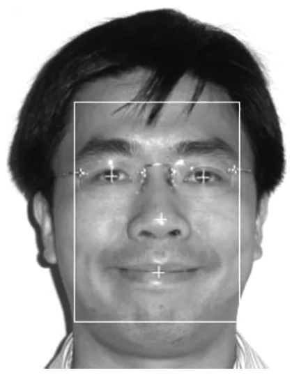
Hình 4 Bốn vị trí đặc trưng chính và toàn bộ vùng khuôn mặt. Các dấu chữ thập biểu thị tâm của các điểm chuẩn. Khung hình chữ nhật biểu thị vùng quan tâm mắt trái và mắt phải được ký hiệu lần lượt bằng các tọa độ (xLE, yLE) và (xRE, yRE). Vị trí của sống mũi là điểm giữa của mắt trái và mắt phải trên trục X. Các vị trí đặc trưng mũi được suy ra từ vị trí đầu mũi được ký hiệu bằng tọa độ (xNS, yNS). Các vị trí đặc trưng môi được suy ra từ tọa độ tâm môi (xLS, yLS).
Trong một hệ thống nhận dạng thị giác, các đặc trưng cần được trích xuất từ đáp ứng bộ lọc của một ảnh. Chúng tôi đã chọn Wavelet Gabor làm bộ lọc vì sự tương đồng của nó với đáp ứng mà các nơ-ron vỏ não thị giác của con người tạo ra. Đối với một ảnh cho trước I(x, y), đáp ứng wavelet Gabor có thể được định nghĩa như sau:
Wmn(x, y) =
I(x1, y1)gmn ∗(x −x1, y −y1)dx1dy1. (2)
Chỉ số dưới m biểu thị kích thước của ngân hàng bộ lọc theo số lượng hướng. Chỉ số dưới n biểu thị kích thước của ngân hàng bộ lọc theo số lượng tỷ lệ. Đặc trưng Gabor Cục bộ F(xF, yF) có thể được biểu diễn dưới dạng một ma trận con của đầu ra wavelet Gabor toàn cục từ (2),
⎡
⎤ (xF, yF) . . . (xF+S, yF) ... ... ... (xF, yF+S) . . . (xF+S, yF+S)
⎢⎣
⎥⎦, (3)
Fmn(xF, yF) = Wmn
trong đó s xác định kích thước của vùng đặc trưng. Các giá trị xF và yF có thể được định nghĩa lần lượt là:
xF = xRF + c, (4)
yF = yRF + c, với −20 ≤c ≺10, (5)
trong đó chỉ số dưới “RF” đề cập đến tọa độ vị trí tâm tương đối, tức là “LE” cho mắt trái, “RE” cho mắt phải, “NS” cho đầu mũi hoặc “LS” cho môi. Giá trị trung bình và độ lệch chuẩn của đầu ra tích chập được sử dụng làm biểu diễn cho mục đích phân loại:
|Fmn(xF, yF)| dxdy, và (6)
μmn =
(|Fmn(xF, yF)| −μmn)2dxdy. (7)
σmn =
Đặc trưng Gabor Cục bộ (LGF) được sử dụng để biểu diễn từng vùng quan tâm như được làm nổi bật trong biểu diễn FEETS. Vector LGF của mỗi ảnh có thể được tạo thành như sau: